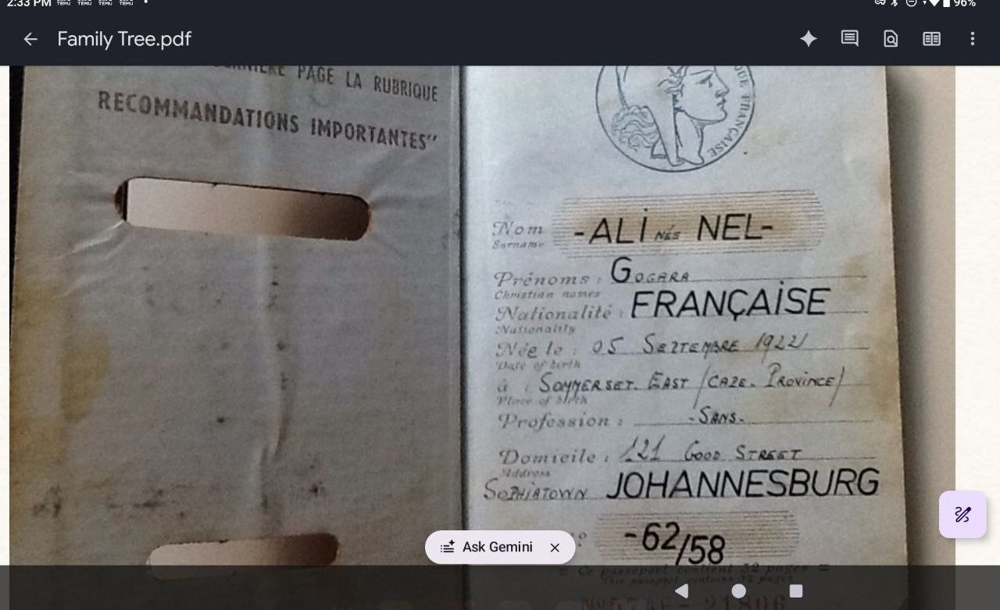
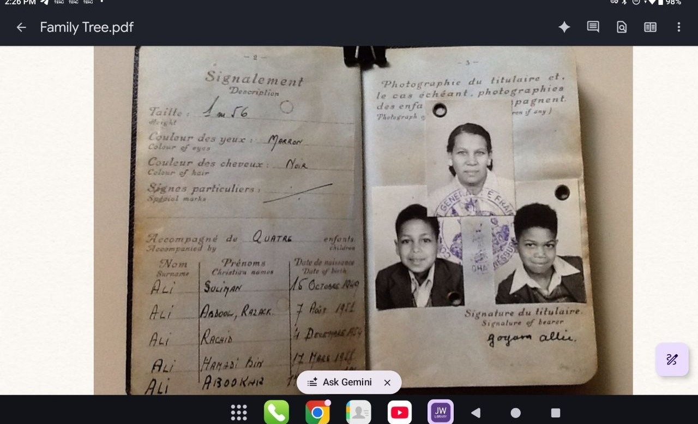
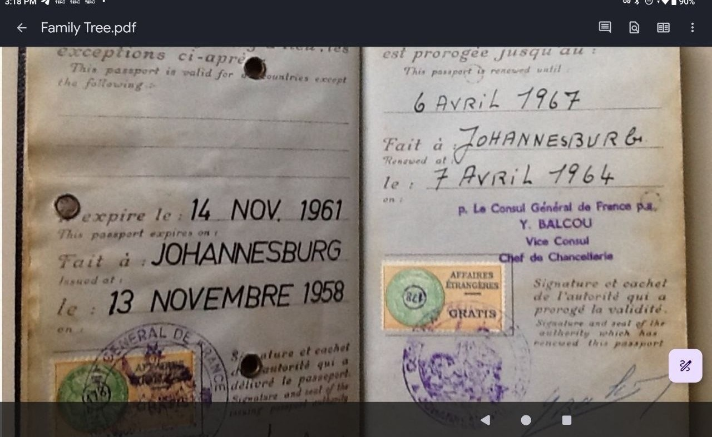
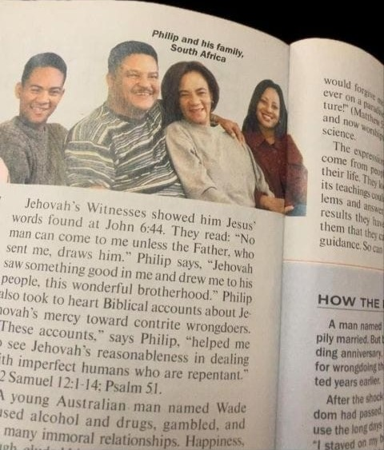
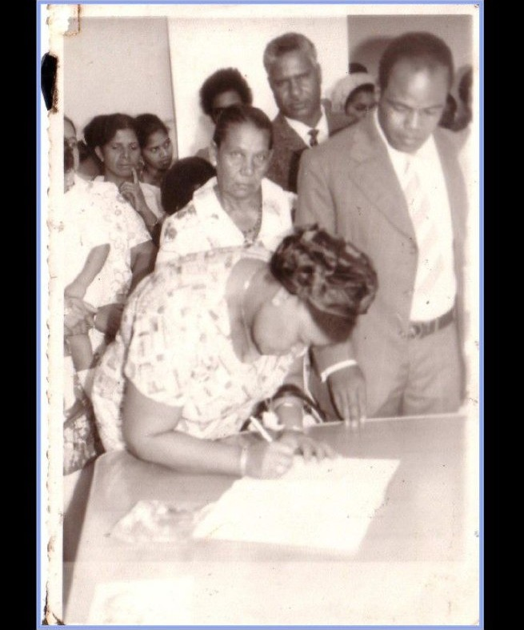
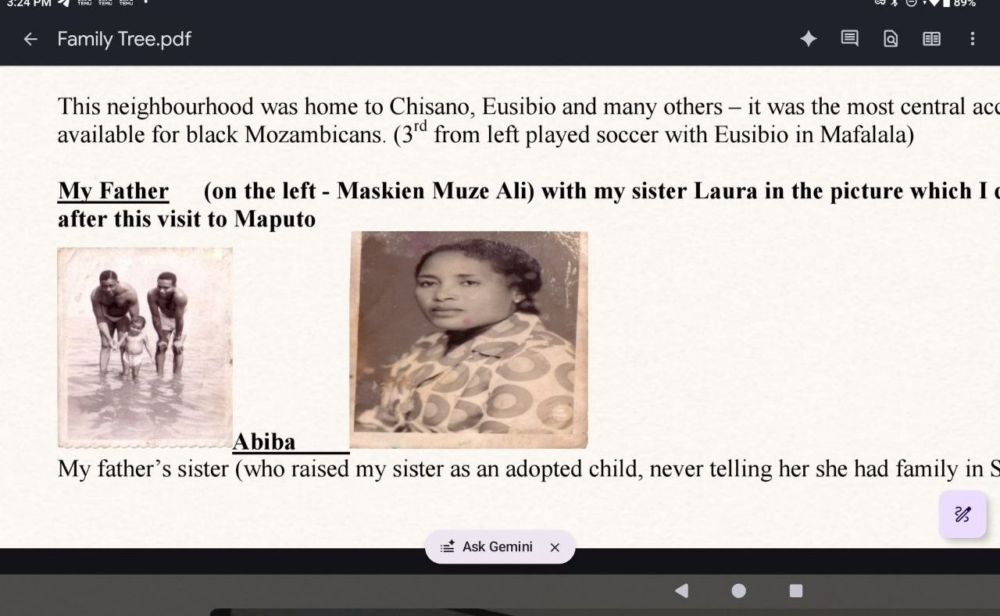
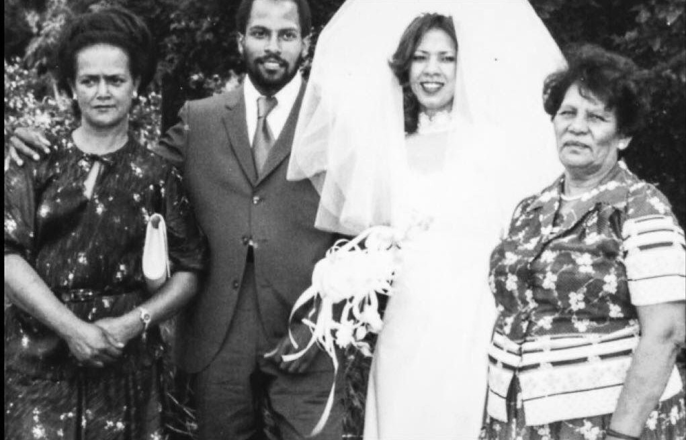
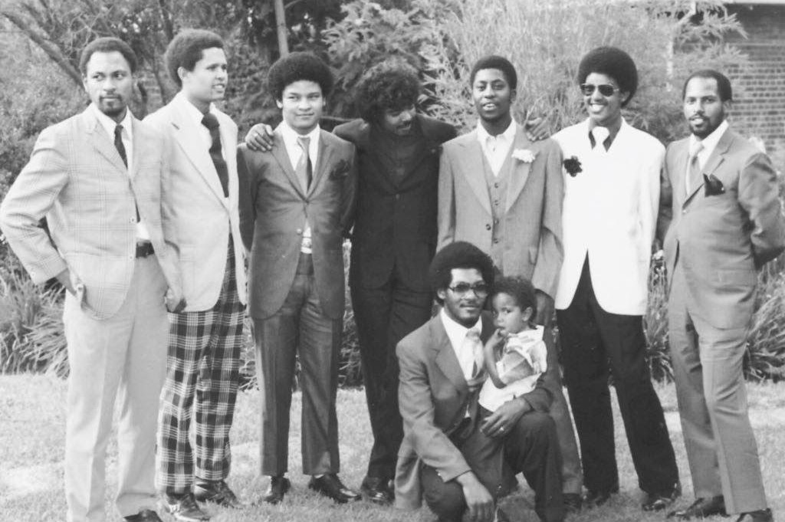
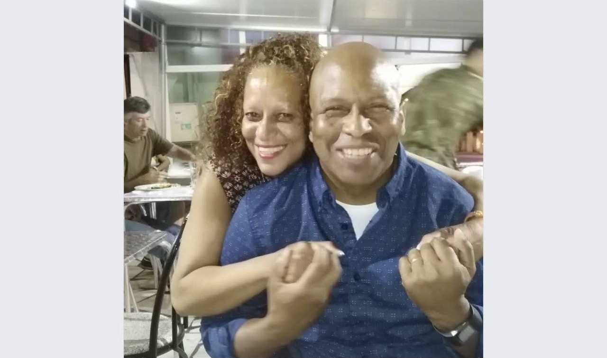
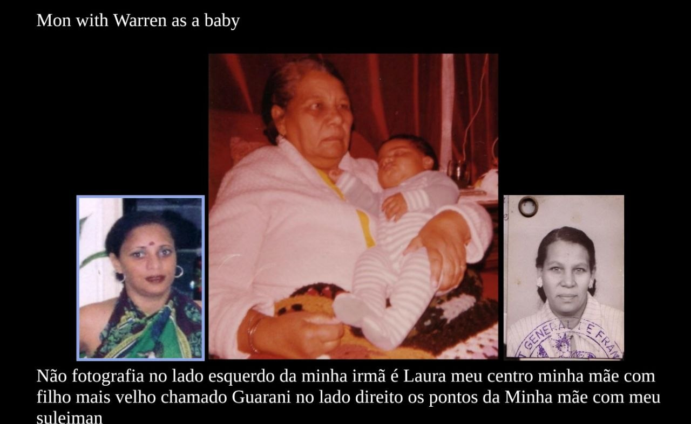

"I have two sons. This is for them, not about them. Every decision I made was to give them a better chance."
This is not a story about a family that stayed. It is a story about a father who got out — so that his sons would never have to make that choice. Ryan in Cape Town. Warren in London. And Sully, the granddaughter, who needs to know where she comes from.
Every decision — the escape from the township, the first house in Ennerdale, the transfer to Cape Town, the career built from nothing — every one of them was for them. This passport is the map of that purpose.
For Ryan Jared Ali · Warren Ansley Ali · Sully
Sully needs to know where she comes from. Here is the line — the names, threaded generation by generation, ending at hers.
Six generations. One current. The names continue.
This is the story of one family — the Ali-Nel family — who lived their lives inside other people's documents: a freehold title, a rent receipt, a French passport, a passbook, a deportation order.
The documents are the frame. But the story is the deep current beneath them — the world economy that pulled a young man from the Comoros to the goldfields of Johannesburg, and then, when the current turned, swept him back out.
This is not a unique story. It is a common story — too common to ignore, because it carries the pattern. And the pattern is the lesson.
"The artifact is not the thing. The content is the thing. The story is the thing — and the artifacts are the evidence." — Hamede, on how the Passport should read

"Powerful countries started pillaging — and I was right in the middle."
His name was Muskien Muze Ali. He came from the Comoros Islands, by way of Mozambique — a young man drawn by the great labour magnet of the early twentieth century: gold. The Wenela recruitment system swept tens of thousands of men from across southern Africa into the Rand's mines.
He arrived in Johannesburg in the 1930s–40s, a foreigner in the city of gold. He married Alice Nel — a woman from a family that looked white but was classified "coloured", performing whiteness to keep its privilege — and together they built a life on Good Street, Sophiatown: a freehold house, multicultural neighbours, a family. It was the rare place where a black family could own land.
"If you look white you can get privilege — as long as nobody asked proof."
But the current was already turning. The world economy that pulled him in would, thirty years later, sweep him out.
"One of the things I remember very clearly was my father's obsession with Salazar. He didn't understand English that well, so whenever the news came up, he would always shout for my mother to come interpret — any developments in Portugal and Mozambique, the change in the political regime. We would joke about it as a family — 'what did they say, what did they say?' — but his anxiety, his watchfulness about what was happening in Portugal, was paramount."
The man one empire would soon deport was watching the other empire that ruled his homeland — waiting for it to fall. Salazar: dictator of Portugal 1932–68. The colonial wars began in Angola 1961, Mozambique 1964. When Salazar fell, the empire began to die — and in 1975, Mozambique was free.
She spoke five languages — and people loved her. She is the true protagonist of this story.
Born 5 September 1921 in Somerset East (Cape), her name was Alice — Alice Nel — and she carried a French passport: ALI-NEL, nationality FRANÇAISE, a document that would outlive her family's movements by decades.
Her family, the Nels, were white in appearance — but apartheid classified them "coloured". Their bitterness came from that provisional whiteness: "racist wannabes," families performing privilege as long as nobody asked for proof. At the same station, siblings would pass siblings and not greet them — because they were "posers."
"That is what apartheid did — it twisted and altered a person's identity."
Her domicile on that passport: 142 Good Street, Sophiatown. The same street that would become famous as Sophiatown's "Street of Shebeens" — Can Themba's House of Truth, Fatty Phyllis Peterson's 39 Steps. The family lived at the heart of the freehold township the state was determined to destroy.
She held the family together through the deportation of her husband, through the removals, through the Westbury years. In her flat on the third floor of the Westbury Flats, she took care of her grandson Warren as a baby — Hamede's young family stayed with her there, before the move to Ennerdale. Five languages. A hero.


He was arrested as an "illegal immigrant" and deported to Mozambique — leaving his wife and children behind.
The gold economy had pulled him in. Now the machinery of empire's paperwork — the pass laws, the "foreign native" status — threw him out. He was still in South Africa when Laura was born in January 1964; soon after, ≈1966/67, Muskien Muze Ali was arrested and deported. Hamede, born 1958, was eight or nine — "the best I could do" in his 2013 notes. He never returned. He died in exile, in Maputo.
His wife stayed. His children stayed. The state kept building around them.
"We were in it — they built new flats and houses while we were still there in sections — we literally stayed 1 km from historic Kanyile Street in a flat on the 3rd floor."
The family moved from freehold Sophiatown to the municipal rental of 616 Kanyile Street, Western Native Township — R5.00 a month. When the state cleared the Western Areas (1955–1968), 22,500+ families were trucked to Meadowlands. But this family stayed.
The state cleared "in sections" — and their section survived. In ~1974, they moved into the new Westbury Flats, a kilometre from Kanyile Street, on the third floor. And here's the irony: Westbury IS Western Native Township — the ground re-zoned for Coloured residents under Group Areas, renamed in 1973.
The family never left the ground. The state renamed the ground around them.
"The in-between are the violence put behind us. Friends that died. Weekend funerals were regarded as entertainment and free food. A place that sucks the life out of you and desensitizes you against immoral behaviour — best left where it is now."
The violence is not the story. It is the texture of the era — the background against which a boy grew up and decided: I will not be desensitized. I will get out.
The bangalalas — the Civic Guards, "those who do not sleep" — had fought the "Russians" gang in the 1950s. By the 1970s, the violence had its own rhythm: weekend funerals as entertainment. Hamede's friends — Mike, Charlotte — died violently. "Too many."
But two came through it. Georgie Jones — the neighbour from 616 Kanyile Street, friend from the beginning, still alive, still in contact: "We've been through the trenches together. We had the same friends. We lost the same friends." Hamede once watched Georgie get stabbed in front of him — rushed to hospital, he survived. And Phillip Winnaar — his best man, part of the crew, who went to jail for various things, came out, and also became a Jehovah's Witness. A letter Hamede wrote from Ennerdale, forgotten, changed his life. Phillip died three or four years ago. "Those are the two only people I think is worth mentioning... we made some significant changes in their lives as well."
"My father's obsession with Salazar... he would always shout for my mother to come interpret... 'what did they say, what did they say?' — but his anxiety, his watchfulness, was paramount. My neighbour in 616 Kanyile Street was Georgie Jones... It would be a grave error to mention my past without mentioning Georgie. And one friend we had in common — Phillip Winnaar... we made some significant changes in their lives as well."
He got out. That is the whole point.
Hamede was asked to say a few words at Phillip's funeral. This is what he said.
"We grew up together, in a neighborhood renowned for its violent gangs and dangerous lifestyle. We became friends because of our mutual love for music and soccer. We were two friends in a social group reveling in this musical 70's and 80's motown music."
"When I got married — with Phillip as my best man and best friend."
Things turned bad. Several of their friends died violent deaths. Phillip ended up in jail. Hamede left the neighbourhood in search of peace and security — and in Ennerdale he found it: "this is where I got the truth."
From Ennerdale, Hamede wrote Phillip a letter about the new find and excitement — "I shared with him the joy and purpose I found and forgot about it." Years later, Phillip told him: "That letter you wrote me made a big impact in my life."
Phillip studied, transformed himself, and served Jehovah. He told Hamede how difficult it was to throw away the arms he had used to keep himself safe — "but it was his trust and love for Jehovah that empowered him." They preached together in Klipspruit, and Hamede saw the respect Phillip received from former gangsters who knew what he had been and what he had become.
"His favorite biblical account of Elijah became our shared mantra, reminding us to persevere in our faith despite opposition — and emblematic of his life. At Horeb, Jehovah asked: 'What is your business here, Elijah?' Elijah felt his work had been in vain — for Phillip, his life was never in vain. Elijah felt alone — for Phillip, he was never alone. Elijah was scared — for Phillip, he was never scared of defending truth and principle."
Phillip's own story appeared in Awake! (July 2011, p. 25): "Philip was a gangster in South Africa. He spent time in jail for his crimes. But despite his lifestyle, Philip longed to know God... Jehovah saw something good in me and drew me to his people, this wonderful brotherhood."
"I am praying and hoping that the next time we meet... he will once again greet me: 'What is your business here?'"

Two brothers were locked in Mozambique by the deportation's aftermath — freed only when Portugal's empire collapsed.
Abdul, the eldest, and Younnis were with Aunt Abiba in Maputo. The deportation of their father trapped them there. They could not return to South Africa — the same machinery that expelled the father barred the sons.
They were freed by economics: Britain could no longer finance colonialism; Portugal's empire collapsed in 1974–75. The Carnation Revolution — a revolution of flowers — ended the colonial war and opened the borders. Abdul and Younnis were free.
But their father had died in exile before he could see it.


"I had to get out fast."
Married at 21, Hamede and Ann first stayed with his mother in her Westbury flat — she took care of baby Warren there — before the move to Ennerdale, ~45 km from the township, where he bought his first house. The story of that house is bittersweet — it involved his brother Rashid, a near-blows fight, and their mother's intervention. "It wasn't a clean movie."
In 1990, he transferred to Cape Town at his own request — working for Mobil Oil. The year Mandela walked free, Hamede walked out of Johannesburg for good.
"Getting my first house in Ennerdale was bittersweet. It wasn't a clean movie... My mum had to intervene because we were almost at blows with each other. But a year later I got my opportunity after pulling some strings, and I could buy my own place... I came to Cape Town with a sizable amount of money in my bank account."


The true last-born — a surviving twin, given to Aunt Abiba, raised in Maputo, never told she had a family in South Africa.
On his first visit to his eldest brother Abdul in Maputo, Abdul took Hamede to Aunt Abiba. She showed him a photograph of a little girl — "exactly like my mother, green eyes, white amongst all the black faces in Maputo."
That girl was Laura, born 9 January 1964 — the family's true last-born, a surviving twin. Her twin brother Faizel died at seven months, of meningitis. The mother — grieving, poor, with an unreliable husband — let the baby go when Abiba visited Johannesburg after Faizel's death. The handover happened "without us knowing, only the adults." The children did not know the baby who left with Aunt Abiba was their sister. Laura was raised in Maputo as Abiba's own child, never told she had a family in South Africa.
The father knew her — he is photographed with little Laura in Maputo — but she never knew the man was her father. By the time Hamede found her, she had left Maputo with her ex-husband, for Portugal. The secret travelled with her across the sea.
When the pieces came together, Laura's response was not anger, not grief — it was gratitude and love:
"Thanks for finding me, Mano — amo te."


"My story is not unique — but too common to ignore the patterns."
Gold money pulled the father in — Wenela, the Rand, the great labour magnet. People follow the current before they ever see it.
Pass laws, "illegal immigrant," a French passport earned by marriage, a deportation order. Belonging is written — and can be un-written.
The Nels looked white but were classified "coloured" — "racist wannabes" performing privilege. Siblings at the same station would not greet each other. "That is what apartheid did — it twisted and altered a person's identity."
W.N.T. → Westbury. The family never moved; the map moved. Freehold → rental → flats, all on the same ground.
Portugal went broke → the brothers were freed (1975). The father died in exile from the same machinery. The same current that frees one strand another.
Weekend funerals as entertainment. Desensitization is the goal — and the danger. A place that sucks the life out of you.
Hamede and Laura — the living line. Memory is what the survivors carry, and memory is what becomes the book.
Hamede got out before the violence took him. The father couldn't read the forces — he was swept. The lesson: read the current before it reads you.
There was no reskilling for the father. The gold-and-empire order collapsed and he was swept out — a displaced worker of an economy he couldn't read.
His son spent a career teaching people to see the next transformation coming. The AI economy is now sweeping a generation the way gold-and-empire swept the father — and the ones who will survive are the ones who learn to read the forces before the forces read them.
This memoir is not nostalgia. It is a pattern manual. The past is the lens; the future is the lesson.
This story is a specimen slide. The pattern is the lens. Your family is the discovery.
"Obrigado por me encontrar, Mano — amo te."
Thanks for finding me, brother — I love you.
The mother who spoke five languages gave her son the one thing the state never could: the words to find his family. A man relearning his mother tongue — because his mother, his hero, taught him that language is the deepest current of all.